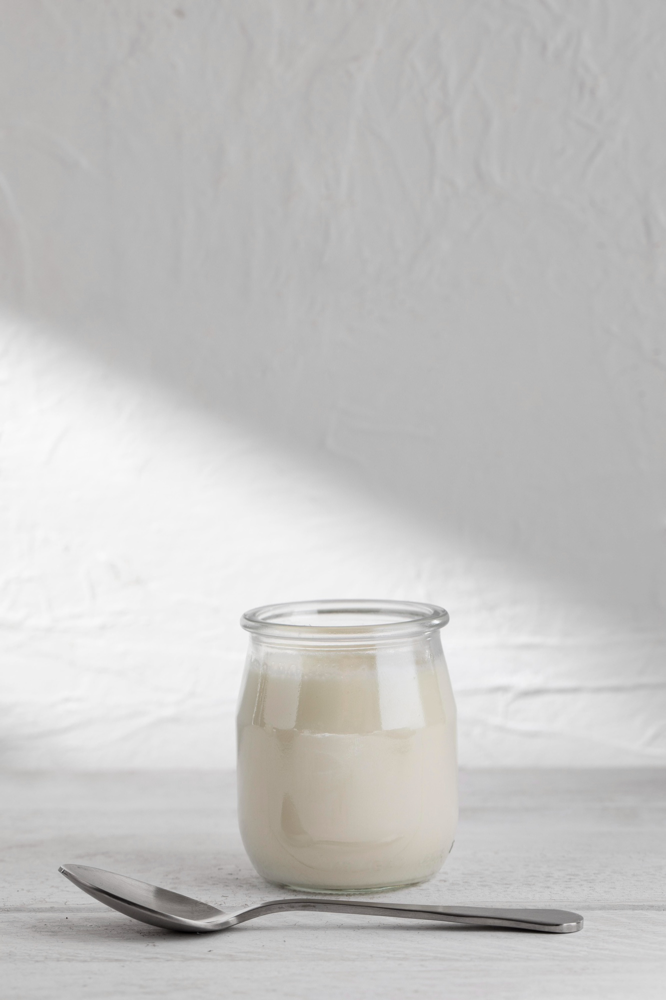

Ballı Yoğurt Parfesi Tarifi
Malzemeler :
- 1 su bardağı yoğurt

- 2 yemek kaşığı bal

- 1/2 su bardağı granola

- 1/2 su bardağı taze meyve (çilek, yaban mersini, vs.)

- 1 yemek kaşığı chia tohumu (isteğe bağlı)

Yapılışı :
- Bir bardağa veya kaseye önce yoğurdun yarısını koyun.
- Üzerine biraz bal, granola ve meyve ekleyin.
- Kalan yoğurdu ekleyin ve aynı sıralamayı tekrar edin.
- Chia tohumlarıyla süsleyip hemen servis yapın.
Tatlımız hazır :

Anasayfa